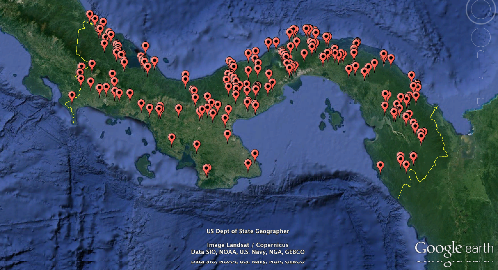
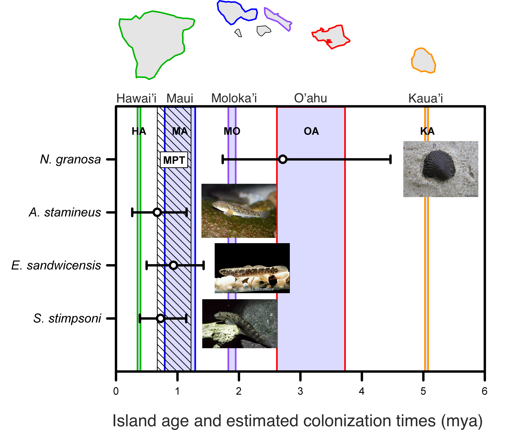
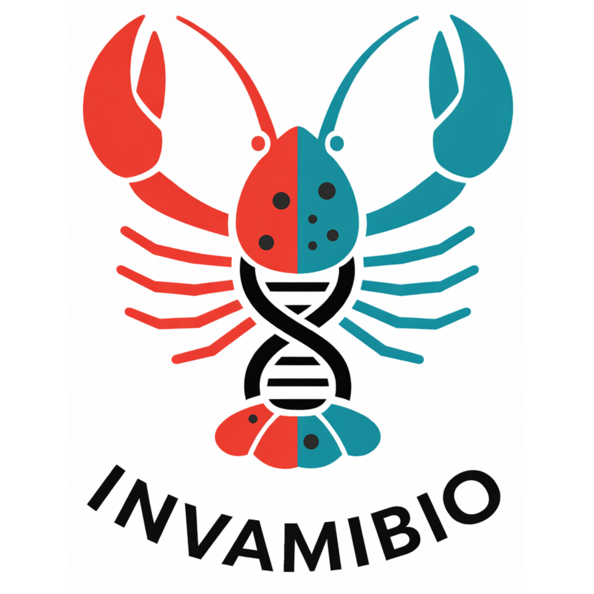
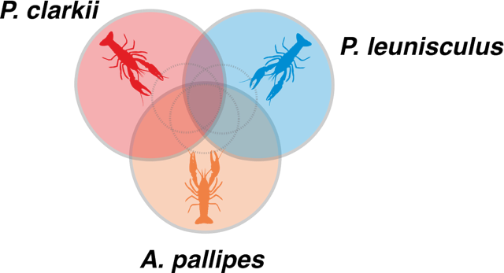

Biodiversity, Invasions, and Conservation
We aim to characterize patterns of genetic diversity across species and evaluate their relationship with human activities, including habitat degradation and the introduction of non-native species and their associated parasites. Our work focuses on biodiversity patterns of native Neotropical freshwater fishes and their parasites. For example, in collaboration with the Consortium for the Barcode of Life, we described, for the first time, the diversity of monogenean flatworms parasitizing freshwater fishes in Panama.


This study complements other DNA barcoding initiatives, such as the freshwater fish barcoding project of Middle America that we conducted at the Smithsonian Tropical Research Institute, and enables us to relate patterns of host and parasite diversity to geographic and ecological factors.
In parallel, we conduct comparative phylogeographic analyses across broad geographic regions to understand how historical and ecological processes shape genetic diversity. For example, we investigated rangewide mitochondrial DNA variation in multiple stream-dwelling species across the Hawaiian archipelago to test whether patterns of colonization and demographic expansion follow predictions based on island age.

Our results indicate that freshwater stream communities assemble across discrete colonization windows, highlighting the importance of ecological opportunity—rather than island age alone—in shaping patterns of biodiversity.
We also reconstruct the introduction histories of invasive species to assess how genetic diversity influences invasion success, with applications for management and conservation. Our research focuses on alien freshwater fishes and crayfish, using metabarcoding approaches to characterize associated microbiomes. We compare the microbiomes of invasive species with those of native species in areas of co-occurrence, as well as with populations from their native ranges. Our primary goals are to address fundamental questions in evolutionary biology—such as the extent to which microbiome composition is determined by host genetics versus environmental factors—and to identify microbiome signatures in invasive species that may be linked to their invasion potential.


Representative publications:
MolEcol.Drivers of Gut Microbial Diversity in Native and Invasive Minnows.png)
JEB.Colonization and expansion Hawaii freshwater fauna.png)
ConGen.Geographic independece and diversity of red shiner introductions.png)
BiolInv.Genetic evidence for multiple introduction events of raccoons (Procyon lotor) in Spain.png)
Projects:
Exploring the microbiome in invasion and conservation of crayfish species: Host-symbiont dynamics between invasive and non-invasive species. Agencia de Investigación e Innovación de Castilla-La Mancha.
Identification and prediction of species invasiveness potential in the gut microbiome. Center of Excellence in Applied Computational Science & Engineering (CEACSE).
Estimating diversity of Neotropical Monogenean (Platyhelminthes) fish parasites. Smithsonian Institution Barcode Network.
Go back to the main Research page.